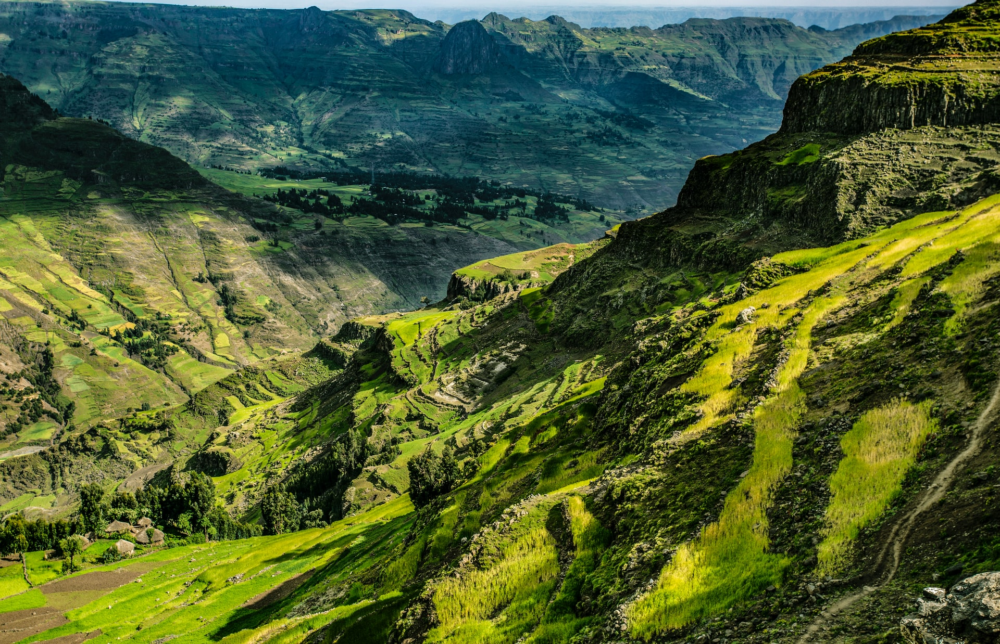
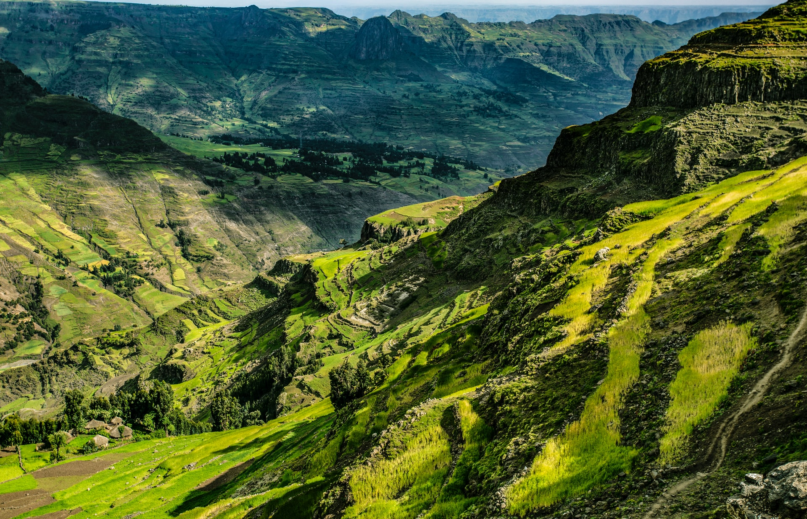

起原
咖啡的來源已無從稽考，有諸多傳說。相傳，今天的奧羅莫人的祖先被認為是首個認識到咖啡樹令人振奮的效果。根據歷史記載在11世紀左右，人們才開始用水煮咖啡做為飲料，但在15世紀以前被阿拉伯世界所壟斷，僅在回教國家間流傳；當時主要被使用在醫學和宗教上，回教醫師和阿轟們承認咖啡具有提神醒腦、健胃、強身、止血等功效。直到到16、17世紀，透過威尼斯商人和荷蘭人的買賣輾轉將咖啡傳入歐洲，很快地，這種充滿東方神秘色彩、口感馥郁香氣迷魅的黑色飲料受到貴族仕紳階級的爭相競逐，咖啡的身價也跟著水漲船高，甚至產生了「黑色金子」的稱號，直至今日已成為世界不可或缺的飲品


 
